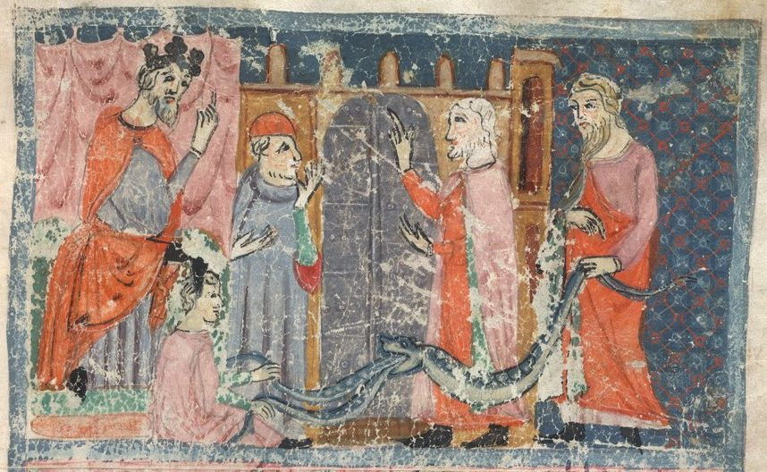

2 Timothy 3 — The Mister Translation

⚠ The magicians of Egypt do ‘the same with their secret arts,’ and Aaron’s staff swallows theirs (Exodus 7:11–12). Exodus gives them no names; Paul calls them Jannes and Jambres (verse 8).

Translator’s Notes
“In the last days difficult times will set in.” “The last days” is the phrase of Joel as Peter quotes it at Acts 2:17, “in the last days, God says, I will pour out from my Spirit”; the first letter spoke of “later times” at 1 Timothy 4:1. The list that follows is in the future tense, “people will be,” and the command that ends it is in the present, “turn away from these,” so the time is read two ways: as the whole age after the resurrection, which Timothy is already living in, or as a stretch still to come; this page records both. “Set in” is enistēmi, the verb of “the present evil age” at Galatians 1:4 (dictionary). Chalepos, “hard, difficult, dangerous,” stands in two verses: the two men from the tombs at Matthew 8:28, “so exceedingly fierce,” and these times. The KJV reads “perilous times shall come”; the ASV reads “grievous times shall come”; the NWT 1984 reads “critical times hard to deal with will be here.”
⚠ “Lovers of self, lovers of money … lovers of pleasure rather than lovers of God.” The list has eighteen items, and one word-family frames it. It opens with philautoi, “lovers of self,” and philargyroi, “lovers of money”; it closes with philēdonoi, “lovers of pleasure,” “rather than” philotheoi, “lovers of God”; and in the middle stands aphilagathoi, “no lovers of good.” The list begins with love aimed at the self and ends with love aimed at pleasure in place of God. “A lover of good” is asked of the overseer at Titus 1:8; “lovers of money” are the Pharisees of Luke 16:14, and the noun is “the love of money” of 1 Timothy 6:10 (dictionary). Seven of the eighteen stand nowhere else in the New Testament: philautos, aspondos, akratēs, anēmeros, aphilagathos, philēdonos and philotheos. The KJV reads “lovers of their own selves, covetous”; the ASV reads “lovers of self, lovers of money”; the Douay reads “lovers of pleasures more than of God.”
“Boasters, arrogant, blasphemers, disobedient to parents … without natural affection, irreconcilable, slanderers.” Four of the words stand in the list of Romans 1:30 and 1:31: “arrogant,” “boasters,” “disobedient to parents” and “without natural affection,” astorgos, without the love that holds parents and children together (dictionary). Aspondos, “irreconcilable,” stands in one verse of the printed New Testament. It is built on spondē, the drink offering poured out when a truce was sworn, so it names a person with whom no truce can be made; the Byzantine text has it at Romans 1:31 as well. “Slanderers” is diaboloi, the word that names the devil (dictionary), used of people as at 1 Timothy 3:11. The KJV reads “trucebreakers, false accusers”; the ASV reads “implacable, slanderers”; the NWT 1984 reads “not open to any agreement, slanderers.”
“Traitors, rash, puffed up.” “Traitor” is prodotēs, the word for Judas Iscariot, “who became a traitor,” at Luke 6:16, and for the “traitors and murderers” of Stephen’s speech at Acts 7:52. “Rash” is propetēs, the town clerk’s “do nothing rash” at Acts 19:36. “Puffed up” is typhoō, “wrapped in smoke,” the third of its three uses, all in the letters to Timothy (dictionary). The KJV reads “Traitors, heady, highminded”; the NIV reads “treacherous, rash, conceited.”
⚠ “Having a form of godliness but having denied its power.” Morphōsis, “form, outward shape,” stands in two verses: “the embodiment of knowledge and of the truth in the law” at Romans 2:20, and here (dictionary). “Godliness” is eusebeia, the Pastorals’ word for faith lived out in conduct (dictionary). “Having denied” is a perfect, a denial made and still standing; it is the verb of Titus 1:16, “by their works they deny him.” Readers take “its power” as the power of godliness to change a life, or as the power of God on which godliness rests. Apotrepomai, “to turn away from,” stands in one verse of the New Testament. The KJV reads “Having a form of godliness, but denying the power thereof: from such turn away”; the NWT 1984 reads “having a form of godly devotion but proving false to its power”; the Douay reads “Having an appearance indeed of godliness.”
“Those who slip into households and take captive silly women.” Endŷnō, “to slip in, to get inside,” stands in one verse of the New Testament (dictionary). “Take captive” is aichmalōtizō, the verb of the prisoner of war (dictionary); the Byzantine text has the near form aichmalōteuō. The KJV reads “creep into houses, and lead captive silly women laden with sins”; the NIV reads “worm their way into homes”; the NWT 1984 reads “slyly work their way into households.”
⚠ “Silly women loaded with sins, led by various desires, always learning.” Gynaikarion stands in one verse of the New Testament. It is the diminutive of gynē, “woman,” a “little woman,” and here the diminutive carries contempt, which “silly women” keeps (dictionary). “Loaded” is sōreuō, “to heap up,” the verb of the coals heaped on an enemy’s head at Romans 12:20. The three participles, “loaded,” “led” and “learning,” all describe the women. Readers take the description three ways: as a portrait of one circle at Ephesus, where the first letter has younger widows who “learn to be idle, going around from house to house” (1 Timothy 5:13); as a stock charge of ancient argument, in which a rival teacher is said to work through women, as Irenaeus says of the teacher Marcus that “he devotes himself especially to women” (Against Heresies 1.13.3, read in the English of the Ante-Nicene Fathers); or as a remark about women more widely. The text describes these women by their sins and their desires, and this page records the readings without choosing. The NWT 1984 reads “weak women loaded down with sins”; the NIV reads “gullible women”; the Douay reads “silly women laden with sins.”
“Always learning and never able to come to the knowledge of the truth.” “The knowledge of the truth” is the phrase of 1 Timothy 2:4, God “who wants all people to be saved and to come to the knowledge of the truth,” and of 2 Timothy 2:25; the noun is epignōsis (dictionary). The KJV reads “Ever learning, and never able to come to the knowledge of the truth”; the NWT 1984 reads “never able to come to an accurate knowledge of truth.”
⚠ “Just as Jannes and Jambres opposed Moses.” The two names are in no book of the Hebrew Bible. Exodus speaks only of “the magicians of Egypt,” who did the same “with their secret arts” (Exodus 7:11, 7:22), until they could not (8:14) and could not even “stand before Moses because of the boils” (Exodus 9:11). The names were known outside Scripture. Pliny the Elder (Natural History 30.2, read in the Latin) speaks of “another faction of magic, depending on Moses and Jannes and Lotapes and the Jews.” The philosopher Numenius, as Eusebius quotes him (Preparation for the Gospel 9.8, read in Gifford’s English), names “Jannes and Jambres, Egyptian sacred scribes,” chosen to stand beside “Musaeus, who led forth the Jews.” The names are also reported in the Aramaic Targum that bears Jonathan’s name, in a related form in the Damascus Document found at Qumran, and in Origen, who is reported to say the verse came from a book called Jannes and Jambres; those three are reported here, not checked (encyclopedia). The Latin Vulgate prints “Mambres,” and so the Douay: “as Jannes and Mambres resisted Moses.” The ASV reads “as Jannes and Jambres withstood Moses, so do these also withstand the truth.”
“People corrupted in mind, disqualified concerning the faith.” “Opposed” and “oppose” are one verb, anthistēmi. Kataphtheirō, “to corrupt utterly,” stands in one verse of the printed New Testament. “Disqualified” is adokimos, the coin that fails the test (dictionary), the word of Titus 1:16, “for any good work, worthless.” The KJV reads “men of corrupt minds, reprobate concerning the faith”; the NWT 1984 reads “men completely corrupted in mind, disapproved as regards the faith.”
“They will make no further progress, for their mindlessness will be plain to all.” Prokopsousin, “they will progress,” stands in three verses, all in this letter: “they will make further progress in ungodliness” at 2 Timothy 2:16, “they will make no further progress” here, and “will progress from bad to worse” at verse 13; the noun is the “progress” of 1 Timothy 4:15 (dictionary). “Mindlessness” is anoia, the “mindless rage” of Luke 6:11 (dictionary). Ekdēlos, “plain, evident,” stands in one verse. The KJV reads “they shall proceed no further: for their folly shall be manifest unto all men”; the Geneva reads “their madness shall be evident unto all men”; the NWT 1984 reads “their madness will be very plain to all.”
“But you followed closely my teaching, conduct, purpose, faith, patience, love, endurance.” “Followed closely” is parakoloutheō, Luke’s word for his own inquiry at Luke 1:3 and the verb of 1 Timothy 4:6, “the good teaching that you have followed closely” (dictionary). The printed text has the aorist, “you followed”; the Byzantine text has the perfect, “you have followed.” Agōgē, “conduct, way of life,” stands in one verse of the New Testament. “Patience” is makrothymia (dictionary) and “endurance” is hypomonē (dictionary), two words kept apart. Paul sets a list of nine, teaching to sufferings, against the eighteen of verses 2–4. The ASV reads “But thou didst follow my teaching, conduct, purpose”; the KJV reads “But thou hast fully known my doctrine”; the NIV reads “know all about my teaching.”
“At Antioch, at Iconium, at Lystra.” These are the three cities of Acts 13–14: the persecution stirred up at Antioch (Acts 13:50), the move at Iconium “to treat them outrageously and to stone them” (Acts 14:5), and Lystra, where Paul was stoned and dragged outside the city, “supposing him to be dead” (Acts 14:19). On the way back through the same cities the disciples were told “that through many tribulations we must enter into the kingdom of God” (Acts 14:22). Lystra is where Acts introduces “a certain disciple … named Timothy” (Acts 16:1), “well spoken of by the brothers in Lystra and Iconium” (16:2), so the places named are the ones Timothy knew. The clause after them is punctuated two ways: as a relative, “such persecutions as I endured,” in the printed text, or as an exclamation, and so the KJV, “what persecutions I endured: but out of them all,” and the ASV, “what persecutions I endured. And out of them all.”
“And out of them all the Lord rescued me.” The words are close to the Greek of Psalm 34:19 (34:20 in the Hebrew, 33:20 in the Greek numbering), “many are the afflictions of the righteous, and out of them all he will rescue them” (yet to come in this translation; Greek checked). “Rescued” is rhyomai, as at 2 Corinthians 1:10, “who rescued us from so great a death and will rescue us.” Readers take “the Lord” here as God, as in the Psalm, or as Christ; the Greek has kyrios and does not say which, so this translation keeps “the Lord.” The KJV reads “but out of them all the Lord delivered me”; the NIV reads “Yet the Lord rescued me from all of them.”
“All who want to live a godly life in Christ Jesus will be persecuted.” Eusebōs, “in a godly way,” stands in two verses: here and Titus 2:12. Westcott and Hort and Tregelles print “to live godly”; the Nestle-Aland and the Byzantine text put the adverb first, which English cannot show. The KJV reads “Yea, and all that will live godly in Christ Jesus shall suffer persecution”; the NWT 1984 reads “all those desiring to live with godly devotion in association with Christ Jesus will also be persecuted.”
“Evil people and charlatans will progress from bad to worse, deceiving and being deceived.” Goēs stands in one verse of the New Testament. In ordinary Greek it is a sorcerer, an enchanter, and from that a cheat who works by tricks; “charlatans” keeps the show and the fraud together, five verses after the magicians of Pharaoh (dictionary). “Deceiving and being deceived” is one verb, planaō, active and then passive, the root of planos, “deceiver” (dictionary). The ASV reads “evil men and impostors shall wax worse and worse”; the KJV reads “evil men and seducers”; the Douay, following the Latin, reverses the pair: “erring, and driving into error.”
⚠ “Remain in the things you learned and were convinced of, knowing from whom you learned them.” Pistoō, “to make sure, to convince,” stands in one verse of the New Testament. “From whom” is plural in the printed text, tinōn, “from what people”; the Byzantine text has the singular, tinos, which points to Paul alone. Readers take the plural as Paul together with the grandmother Lois and the mother Eunice of 2 Timothy 1:5 (encyclopedia), or with the “many witnesses” of 2 Timothy 2:2. “Remain” is the encouragement given on the way back through Lystra, “to remain in the faith” (Acts 14:22). The KJV reads “knowing of whom thou hast learned them”; the NWT 1984 reads “knowing from what persons you learned them”; the NIV reads “because you know those from whom you learned it.”
⚠ “From infancy you have known the sacred writings, which are able to make you wise for salvation.” “Infancy” is brephos, the word of the infant in the feeding trough at Luke 2:12 (dictionary). “The sacred writings,” hiera grammata, “sacred letters,” are the Scriptures of Israel, which a boy with “a believing Jewish” mother (Acts 16:1) would be taught (dictionary). Westcott and Hort print the words without the article; Tregelles, the Nestle-Aland and the Byzantine text have it, and English needs it either way. Sophizō, “to make wise,” stands in two verses: here, and the “cleverly devised myths” of 2 Peter 1:16 (dictionary). The Greek of Psalm 19:7 (19:8 in the Hebrew, 18:8 in the Greek numbering) uses the same verb of infants: “the testimony of Jehovah is faithful, making infants wise” (yet to come in this translation; the Hebrew has the name, the Greek kyrios; Greek checked). “The faith that is in Christ Jesus” is the phrase of 1 Timothy 3:13. The KJV reads “from a child thou hast known the holy scriptures”; the ASV reads “from a babe thou hast known the sacred writings”; the NWT 1984 reads “from infancy you have known the holy writings.”
⚠ “All Scripture is God-breathed.” Theopneustos stands in one verse of the New Testament (dictionary). It is built from theos, “God,” and pneō, “to breathe, to blow,” the stem of pneuma, “breath, wind, spirit.” Its form is that of theodidaktos, “taught by God,” at 1 Thessalonians 4:9, so it is read as “breathed by God.” The Latin rendered it divinitus inspirata, “breathed into from God,” and the English word “inspiration” comes from that Latin. “God-breathed” keeps the breath in the English; whether the picture is of God breathing the writings out or breathing into them is debated, and readers set beside it 2 Peter 1:21, “men, carried along by the Holy Spirit, spoke from God.” The KJV reads “All scripture is given by inspiration of God”; the NIV reads “All Scripture is God-breathed”; the NWT 1984 reads “All Scripture is inspired of God.”
⚠ Two readings of a line with no verb. The Greek has no “is”: pasa graphē theopneustos kai ōphelimos. Read with both adjectives as predicates, it says “All Scripture is God-breathed and profitable,” and so the NIV, “All Scripture is God-breathed and is useful”; the NWT 1984, “All Scripture is inspired of God and beneficial”; and the Geneva, “the whole Scripture is given by inspiration of God, and is profitable.” Read with the first adjective attached to the noun and kai as “also,” it says “Every God-breathed Scripture is also profitable”: the Latin Vulgate, Omnis Scriptura divinitus inspirata utilis est; the Douay, “All scripture, inspired of God, is profitable”; and the ASV, “Every scripture inspired of God is also profitable.” Pasa without the article is often “every,” each passage; with graphē taken as a name, it is “all.” This translation prints the first reading; the second has the Vulgate and the ASV behind it, and this page does not decide between them.
Which “Scripture”? And the uses the verse has been put to. The writings Timothy knew “from infancy” (verse 15) were the Scriptures of Israel. Whether “all Scripture” reaches further is read differently: 1 Timothy 5:18 introduces with “the Scripture says” a line that matches Luke 10:7, “the worker is worthy of his wages,” and 2 Peter 3:16 sets Paul’s letters beside “the rest of the Scriptures” (yet to come in this translation; Greek checked). The verse is the chief text of Christian teaching on the inspiration of Scripture. Protestant teaching cites it for Scripture as the sufficient rule of faith; Catholic and Orthodox teaching answers that it calls Scripture “profitable,” and sets beside it “hold to the traditions that you were taught, whether by word or by our letter” (2 Thessalonians 2:15). This page records the readings and does not choose.
“Profitable for teaching, for reproof, for correction, for discipline in righteousness.” Ōphelimos, “profitable,” stands in three verses, all in the Pastoral letters: godliness “of profit for all things” at 1 Timothy 4:8, this one, and Titus 3:8 (yet to come in this translation; dictionary). Elegmos, “reproof,” stands in one verse; the Byzantine text has elenchos, the “proof” of Hebrews 11:1 (dictionary). Epanorthōsis, “correction,” a setting upright again, stands in one verse (dictionary). “Discipline” is paideia, the word of Ephesians 6:4, “the discipline and admonition of the Lord.” The NWT 1984 reads “for reproving, for setting things straight, for disciplining in righteousness”; the Geneva reads “to teach, to convince, to correct, and to instruct in righteousness.”
“So that the man of God may be complete, completely equipped for every good work.” Artios, “complete, fit,” stands in one verse of the New Testament (dictionary). Exartizō, “to fit out completely,” stands in two verses: “we had completed the days” at Acts 21:5, and here (dictionary). The two words share a root, and the English repeats “complete” to keep it. “The man of God” is the title of Moses at Deuteronomy 33:1, “Moses, the man of God” (dictionary), and the address of 1 Timothy 6:11, “O man of God”; “for every good work” is the phrase of 2 Timothy 2:21. The KJV reads “That the man of God may be perfect, throughly furnished unto all good works”; the ASV reads “complete, furnished completely unto every good work”; the NIV reads “the servant of God.”
Patterns worth carrying forward
Where this translation keeps the exact words: “lovers of” for each of the phil- words, and “no lovers of good” against the “lover of good” of Titus 1:8; “without natural affection,” as at Romans 1:31; “slanderers” for diaboloi; “traitors,” as at Luke 6:16; “rash,” as at Acts 19:36; “having denied,” the verb of Titus 1:16; “silly women” for the diminutive; “Jannes and Jambres,” names from outside Exodus; “opposed” and “oppose” for one verb; “progress,” as at 2:16; “mindlessness,” as at Luke 6:11; “followed closely,” as at 1 Timothy 4:6; “rescued,” as at 2 Corinthians 1:10; “charlatans”; “from whom” for a plural; “God-breathed”; “profitable,” as at 1 Timothy 4:8; “discipline,” as at Ephesians 6:4; “complete, completely equipped” for one root; and “the man of God,” as at 1 Timothy 6:11.
Echoes paid. The last days of Acts 2:17 and the later times of 1 Timothy 4:1; the love of money of 1 Timothy 6:10; the lover of good of Titus 1:8; puffed up from 1 Timothy 3:6 and 1 Timothy 6:4; the knowledge of the truth of 1 Timothy 2:4 and 2 Timothy 2:25; the magicians of Exodus 7:11; progress from 2 Timothy 2:16; Antioch, Iconium and Lystra from Acts 13:50, Acts 14:5 and Acts 14:19, and Timothy at Acts 16:1; Lois and Eunice of 2 Timothy 1:5; the man of God of 1 Timothy 6:11; and every good work from 2 Timothy 2:21.
Echoes planted. “Preach the word” at 4:2; teachers heaped up by those with itching ears, a compound of the verb of verse 6, at 4:3; Alexander, who opposed our words with the verb of Jannes and Jambres, at 4:15; and the Lord who will rescue me at 4:18.
Next in this book: 2 Timothy 4, already on these pages. “Preach the word,” itching ears, “I have fought the good fight,” the cloak left at Troas, and the last greetings of the letter.